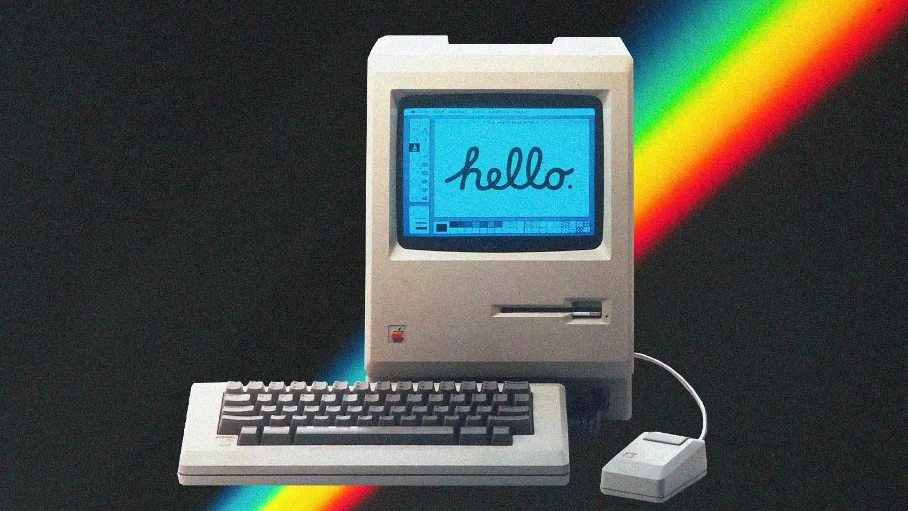

O design intuitivo do Macintosh foi uma das suas grandes inovações. Com ícones e janelas que facilitavam a navegação, o computador permitiu que usuários sem experiência em programação pudessem utilizar a tecnologia de maneira mais acessível e amigável. Essa abordagem não apenas tornou a computação mais acessível, mas também influenciou profundamente o desenvolvimento de interfaces em futuras gerações de software.
O lançamento do Macintosh marcou o início de uma nova era na computação, consolidando a Apple como uma líder em inovação de produtos. Seu impacto é sentido até hoje, com a GUI se tornando um padrão em praticamente todos os sistemas operacionais modernos. A filosofia de design centrada no usuário que começou com o Macintosh continua a ser um princípio fundamental na criação de tecnologias hoje. Em resumo, o Macintosh não foi apenas um computador; ele foi uma revolução que transformou a computação em uma experiência visual e interativa, estabelecendo as bases para o futuro da tecnologia pessoal e consolidando a Apple como uma força inovadora no setor.
Isso é o que queremos: que as pessoas olhem para os computadores e vejam algo bonito.
- Steve Jobs.
